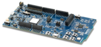

Configuring factory data for the nRF Connect examples
Contents
Configuring factory data for the nRF Connect examples#
Factory data is a set of device parameters written to the non-volatile memory during the manufacturing process. This guide describes the process of creating and programming factory data using Matter and the nRF Connect platform from Nordic Semiconductor.
The factory data parameter set includes different types of information, for example about device certificates, cryptographic keys, device identifiers, and hardware. All those parameters are vendor-specific and must be inserted into a device’s persistent storage during the manufacturing process. The factory data parameters are read at the boot time of a device. Then, they can be used in the Matter stack and user application (for example during commissioning).
All of the factory data parameters are protected against modifications by the software, and the firmware data parameter set must be kept unchanged during the lifetime of the device. When implementing your firmware, you must make sure that the factory data parameters are not re-written or overwritten during the Device Firmware Update (DFU) or factory resets, except in some vendor-defined cases.
For the nRF Connect platform, the factory data is stored by default in a separate partition of the internal flash memory. This helps to keep the factory data secure by applying hardware write protection.
Note: Due to hardware limitations, in the nRF Connect platform, protection against writing can be applied only to the internal memory partition. The Fprotect is the hardware flash protection driver, and we used it to ensure write protection of the factory data partition in internal flash memory.
Overview#
You can implement the factory data set described in the factory data component table in various ways, as long as the final HEX file contains all mandatory components defined in the table. In this guide, the generating factory data and the building an example with factory data sections describe one of the implementations of the factory data set created by the nRF Connect platform’s maintainers. At the end of the process, you get a HEX file that contains the factory data partition in the CBOR format.
The factory data accessor is a component that reads and decodes factory data parameters from the device’s persistent storage and creates an interface to provide all of them to the Matter stack and to the user application.
The default implementation of the factory data accessor assumes that the factory data stored in the device’s flash memory is provided in the CBOR format. However, it is possible to generate the factory data set without using the nRF Connect scripts and implement another parser and a factory data accessor. This is possible if the newly provided implementation is consistent with the Factory Data Provider. For more information about preparing a factory data accessor, see the section about using own factory data implementation.
Note: Encryption and security of the factory data partition is not provided yet for this feature.
Factory data component table#
The following table lists the parameters of a factory data set:
Key name |
Full name |
Length |
Format |
Conformance |
Description |
|---|---|---|---|---|---|
|
factory data version |
2 B |
uint16 |
mandatory |
A version of the current factory data set. It cannot be changed by a user and it must be coherent with current version of the Factory Data Provider on device side. |
|
serial number |
<1, 32> B |
ASCII string |
mandatory |
A serial number parameter defines an unique number of manufactured device. The maximum length of the serial number is 32 characters. |
|
vendor ID |
2 B |
uint16 |
mandatory |
A CSA-assigned ID for the organization responsible for producing the device. |
|
product ID |
2 B |
uint16 |
mandatory |
A unique ID assigned by the device vendor to identify the product. It defaults to a CSA-assigned ID that designates a non-production or test product. |
|
vendor name |
<1, 32> B |
ASCII string |
mandatory |
A human-readable vendor name that provides a simple string containing identification of device’s vendor for the application and Matter stack purposes. |
|
product name |
<1, 32> B |
ASCII string |
mandatory |
A human-readable product name that provides a simple string containing identification of the product for the application and the Matter stack purposes. |
|
manufacturing date |
<8, 10> B |
ISO 8601 |
mandatory |
A manufacturing date specifies the date that the device was manufactured. The date format used is ISO 8601, for example |
|
hardware version |
2 B |
uint16 |
mandatory |
A hardware version number that specifies the version number of the hardware of the device. The value meaning and the versioning scheme is defined by the vendor. |
|
hardware version string |
<1, 64> B |
uint16 |
mandatory |
A hardware version string parameter that specifies the version of the hardware of the device as a more user-friendly value than that presented by the hardware version integer value. The value meaning and the versioning scheme is defined by the vendor. |
|
rotating device ID unique ID |
<16, 32> B |
byte string |
mandatory |
The unique ID for rotating device ID, which consists of a randomly-generated 128-bit (or longer) octet string. This parameter should be protected against reading or writing over-the-air after initial introduction into the device, and stay fixed during the lifetime of the device. |
|
(DAC) Device Attestation Certificate |
<1, 602> B |
byte string |
mandatory |
The Device Attestation Certificate (DAC) and the corresponding private key are unique to each Matter device. The DAC is used for the Device Attestation process and to perform commissioning into a fabric. The DAC is a DER-encoded X.509v3-compliant certificate, as defined in RFC 5280. |
|
DAC private key |
68 B |
byte string |
mandatory |
The private key associated with the Device Attestation Certificate (DAC). This key should be encrypted and maximum security should be guaranteed while generating and providing it to factory data. |
|
Product Attestation Intermediate |
<1, 602> B |
byte string |
mandatory |
An intermediate certificate is an X.509 certificate, which has been signed by the root certificate. The last intermediate certificate in a chain is used to sign the leaf (the Matter device) certificate. The PAI is a DER-encoded X.509v3-compliant certificate as defined in RFC 5280. |
|
SPAKE2+ iteration counter |
4 B |
uint32 |
mandatory |
A SPAKE2+ iteration counter is the amount of PBKDF2 (a key derivation function) interactions in a cryptographic process used during SPAKE2+ Verifier generation. |
|
SPAKE2+ salt |
<32, 64> B |
byte string |
mandatory |
The SPAKE2+ salt is a random piece of data, at least 32 byte long. It is used as an additional input to a one-way function that performs the cryptographic operations. A new salt should be randomly generated for each password. |
|
SPAKE2+ verifier |
97 B |
byte string |
mandatory |
The SPAKE2+ verifier generated using SPAKE2+ salt, iteration counter, and passcode. |
|
Discriminator |
2 B |
uint16 |
mandatory |
A 12-bit value matching the field of the same name in the setup code. The discriminator is used during the discovery process. |
|
SPAKE passcode |
4 B |
uint32 |
optional |
A pairing passcode is a 27-bit unsigned integer which serves as a proof of possession during the commissioning. Its value must be restricted to the values from |
|
User data |
variable |
JSON string |
max 1024 B |
The user data is provided in the JSON format. This parameter is optional and depends on user’s or manufacturer’s purpose (or both). It is provided as a string from persistent storage and should be parsed in the user application. This data is not used by the Matter stack. |
Factory data format#
The factory data set must be saved into a HEX file that can be written to the flash memory of the Matter device.
In the nRF Connect example, the factory data set is represented in the CBOR format and is stored in a HEX file. The file is then programmed to a device. The JSON format is used as an intermediate, human-readable representation of the data. The format is regulated by the JSON Schema file.
All parameters of the factory data set are either mandatory or optional:
Mandatory parameters must always be provided, as they are required for example to perform commissioning to the Matter network.
Optional parameters can be used for development and testing purposes. For example, the
userdata parameter consists of all data that is needed by a specific manufacturer and that is not included in the mandatory parameters.
In the factory data set, the following formats are used:
uint16 and uint32 – These are the numeric formats representing, respectively, two-bytes length unsigned integer and four-bytes length unsigned integer. This value is stored in a HEX file in the big-endian order.
Byte string - This parameter represents the sequence of integers between
0and255(inclusive), without any encoding. Because the JSON format does not allow to use of byte strings, thehex:prefix is added to a parameter, and its representation is converted to a HEX string. For example, an ASCII stringabbais represented ashex:61626261in the JSON file and then stored in the HEX file as0x61626261. The HEX string length in the JSON file is two times greater than the byte string plus the size of the prefix.ASCII string is a string representation in ASCII encoding without null-terminating.
ISO 8601 format is a date format that represents a date provided in the
YYYY-MM-DDorYYYYMMDDformat.All certificates stored in factory data are provided in the X.509 format.
Enabling factory data support#
By default, the factory data support is disabled in all nRF Connect examples and
the nRF Connect device uses predefined parameters from the Matter core, which
you should not change. To start using factory data stored in the flash memory
and the Factory Data Provider from the nRF Connect platform, build an
example with the following option (replace <build_target> with your board
name, for example, nrf52840dk_nrf52840):
$ west build -b <build_target> -- -DCONFIG_CHIP_FACTORY_DATA=y
Generating factory data#
This section describes generating factory data using the following nRF Connect Python scripts:
The first script creates a JSON file that contains a user-friendly representation of the factory data.
The second script uses the JSON file to create a factory data partition and save it to a HEX file.
After these operations, you will program a HEX file containing factory data partition into the device’s flash memory.
You can use the second script without invoking the first one by providing a JSON file written in another way. To make sure that the JSON file is correct and the device is able to read out parameters, verify the file using the JSON schema.
Creating factory data JSON file with the first script#
A Matter device needs a proper factory data partition stored in the flash memory to read out all required parameters during startup. To simplify the factory data generation, you can use the generate_nrfconnect_chip_factory_data.py Python script to provide all required parameters and generate a human-readable JSON file.
To use this script, complete the following steps:
Navigate to the
connectedhomeiproot directory.Run the script with
-hoption to see all possible options:
$ python scripts/tools/nrfconnect/generate_nrfconnect_chip_factory_data.py -h
Prepare a list of arguments:
a. Fill up all mandatory arguments:
--sn --vendor_id, --product_id, --vendor_name, --product_name, --date, --hw_ver, --hw_ver_str, --spake2_it, --spake2_salt, --discriminator
b. Add output file path:
-o <output_dir>
c. Generate SPAKE2 verifier using one of the following methods:
Automatic:
--passcode <pass_code>
Manual:
--spake2_verifier <verifier>
d. Add paths to
.derfiles that contain PAI and DAC certificates and the DAC private key (replace the respective variables with the file names) using one of the following methods:Automatic:
--chip_cert_path <path to chip-cert executable>
Note: To generate new certificates, you need the
chip-certexecutable. See the note at the end of this section to learn how to get it.Manual:
--dac_cert <path to DAC certificate>.der --dac_key <path to DAC key>.der --pai_cert <path to PAI certificate>.der
e. (optional) Add the new unique ID for rotating device ID using one of the following options:
Provide an existing ID:
--rd_uid <rotating device ID unique ID>
Generate a new ID and provide it ():
--generate_rd_uid --rd_uid <rotating device ID unique ID>
You can find a newly generated unique ID in the console output.
f. (optional) Add the JSON schema to verify the JSON file (replace the respective variable with the file path):
--schema <path to JSON Schema file>
g. (optional) Add a request to include a pairing passcode in the JSON file:
--include_passcode
h. (optional) Add the request to overwrite existing the JSON file:
--overwrite
Run the script using the prepared list of arguments:
$ python generate_nrfconnect_chip_factory_data.py <arguments>
For example, a final invocation of the Python script can look similar to the following one:
$ python scripts/tools/nrfconnect/generate_nrfconnect_chip_factory_data.py \
--sn "11223344556677889900" \
--vendor_id 65521 \
--product_id 32774 \
--vendor_name "Nordic Semiconductor ASA" \
--product_name "not-specified" \
--date "2022-02-02" \
--hw_ver 1 \
--hw_ver_str "prerelase" \
--dac_cert "credentials/development/attestation/Matter-Development-DAC-8006-Cert.der" \
--dac_key "credentials/development/attestation/Matter-Development-DAC-8006-Key.der" \
--pai_cert "credentials/development/attestation/Matter-Development-PAI-noPID-Cert.der" \
--spake2_it 1000 \
--spake2_salt "U1BBS0UyUCBLZXkgU2FsdA==" \
--discriminator 0xF00 \
--generate_rd_uid \
--passcode 20202021 \
--out "build.json" \
--schema "scripts/tools/nrfconnect/nrfconnect_factory_data.schema"
As the result of the above example, a unique ID for the rotating device ID is
created, SPAKE2+ verifier is generated using the spake2p executable, and the
JSON file is verified using the prepared JSON Schema.
If the script finishes successfully, go to the location you provided with the
-o argument. Use the JSON file you find there when
generating the factory data partition.
Note: Generating new certificates is optional if default vendor and product IDs are used and requires providing a path to the
chip-certexecutable. To get it, complete the following steps:
Navigate to the
connectedhomeiproot directory.In a terminal, run the command:
cd src/tools/chip-cert && gn gen out && ninja -C out chip-certto build the executable.Add the
connectedhomeip/src/tools/chip-cert/out/chip-certpath as an argument of--chip_cert_pathfor the Python script.
Note: By default, overwriting the existing JSON file is disabled. This means that you cannot create a new JSON file with the same name in the exact location as an existing file. To allow overwriting, add the
--overwriteoption to the argument list of the Python script.
Verifying using the JSON Schema tool#
The JSON file that contains factory data can be verified using the JSON Schema file. You can use one of three options to validate the structure and contents of the JSON data.
Option 1: Using the php-json-schema tool#
To check the JSON file using a JSON Schema verification tool manually on a Linux machine, complete the following steps:
Install the
php-json-schemapackage:
$ sudo apt install php-json-schema
Run the following command, with <path_to_JSON_file> and <path_to_schema_file> replaced with the paths to the JSON file and the Schema file, respectively:
$ validate-json <path_to_JSON_file> <path_to_schema_file>
The tool returns empty output in case of success.
Option 2: Using a website validator#
You can also use external websites instead of the php-json-schema tool to
verify a factory data JSON file. For example, go to the
JSON Schema Validator website,
copy-paste the content of the
JSON Schema file
to the first window and a JSON file to the second one. A message under the
window indicates the validation status.
Option 3: Using the nRF Connect Python script#
You can have the JSON file checked automatically by the Python script during the
file generation. For this to happen, you must install the jsonschema Python
module in your Python environment and provide the path to the JSON schema file
as an additional argument. To do this, complete the following steps:
Install the
jsonschemaPython module by invoking one of the following commands from the Matter root directory:Install only the
jsonschemamodule:$ python -m pip install jsonschema
Install the
jsonschemamodule together with all dependencies for Matter:$ python -m pip install -r ./scripts/requirements.nrfconnect.txt
Run the following command (remember to replace the <path_to_schema> variable):
$ python generate_nrfconnect_chip_factory_data.py --schema <path_to_schema>
Note: To learn more about the JSON schema, visit this unofficial JSON Schema tool usage website.
Preparing factory data partition on a device#
The factory data partition is an area in the device’s persistent storage where a
factory data set is stored. This area is configured using the
Partition Manager,
within which all partitions are declared in the pm_static.yml file.
To prepare an example that supports factory data, add a partition called
factory_data to the pm_static.yml file. The partition size should be a
multiple of one flash page (for nRF52 and nRF53 SoCs, a single page size equals
4 kB).
See the following code snippet for an example of a factory data partition in the
pm_static.yml file. The snippet is based on the pm_static.yml file from the
Lock application example
and uses the nRF52840 DK:
...
mcuboot_primary_app:
orig_span: &id002
- app
span: *id002
address: 0x7200
size: 0xf3e00
factory_data:
address: 0xfb00
size: 0x1000
region: flash_primary
settings_storage:
address: 0xfc000
size: 0x4000
region: flash_primary
...
In this example, a factory_data partition has been placed between the
application partition (mcuboot_primary_app) and the settings storage. Its size
has been set to one flash page (4 kB).
Use Partition Manager’s report tool to ensure you created a factory data partition correctly. To do that, navigate to the example directory and run the following command:
$ west build -t partition_manager_report
The output will look similar to the following one:
external_flash (0x800000 - 8192kB):
+---------------------------------------------+
| 0x0: mcuboot_secondary (0xf4000 - 976kB) |
| 0xf4000: external_flash (0x70c000 - 7216kB) |
+---------------------------------------------+
flash_primary (0x100000 - 1024kB):
+-------------------------------------------------+
| 0x0: mcuboot (0x7000 - 28kB) |
+---0x7000: mcuboot_primary (0xf4000 - 976kB)-----+
| 0x7000: mcuboot_pad (0x200 - 512B) |
+---0x7200: mcuboot_primary_app (0xf3e00 - 975kB)-+
| 0x7200: app (0xf3e00 - 975kB) |
+-------------------------------------------------+
| 0xfb000: factory_data (0x1000 - 4kB) |
| 0xfc000: settings_storage (0x4000 - 16kB) |
+-------------------------------------------------+
sram_primary (0x40000 - 256kB):
+--------------------------------------------+
| 0x20000000: sram_primary (0x40000 - 256kB) |
+--------------------------------------------+
Creating a factory data partition with the second script#
To store the factory data set in the device’s persistent storage, convert the data from the JSON file to its binary representation in the CBOR format. To do this, use the nrfconnect_generate_partition.py to generate the factory data partition:
Navigate to the connectedhomeip root directory
Run the following command pattern:
$ python scripts/tools/nrfconnect/nrfconnect_generate_partition.py -i <path_to_JSON_file> -o <path_to_output> --offset <partition_address_in_memory> --size <partition_size>
In this command:
<path_to_JSON_file> is a path to the JSON file containing appropriate factory data.
<path_to_output> is a path to an output file without any prefix. For example, providing
/build/outputas an argument will result in creating/build/output.hexand/build/output.bin.<partition_address_in_memory> is an address in the device’s persistent storage area where a partition data set is to be stored.
<partition_size> is a size of partition in the device’s persistent storage area. New data is checked according to this value of the JSON data to see if it fits the size.
To see the optional arguments for the script, use the following command:
$ python scripts/tools/nrfconnect/nrfconnect_generate_partition.py -h
Example of the command for the nRF52840 DK:
$ python scripts/tools/nrfconnect/nrfconnect_generate_partition.py -i build/zephyr/factory_data.json -o build/zephyr/factory_data --offset 0xfb000 --size 0x1000
As a result, factory_data.hex and factory_data.bin files are created in the
/build/zephyr/ directory. The first file contains the memory offset. For this
reason, it can be programmed directly to the device using a programmer (for
example, nrfjprog).
Building an example with factory data#
You can manually generate the factory data set using the instructions described in the Generating factory data section. Another way is to use the nRF Connect platform build system that creates factory data content automatically using Kconfig options and includes the content in the final firmware binary.
To enable generating the factory data set automatically, go to the example’s
directory and build the example with the following option (replace
nrf52840dk_nrf52840 with your board name):
$ west build -b nrf52840dk_nrf52840 -- -DCONFIG_CHIP_FACTORY_DATA=y -DCONFIG_CHIP_FACTORY_DATA_BUILD=y
Alternatively, you can also add CONFIG_CHIP_FACTORY_DATA_BUILD=y Kconfig
setting to the example’s prj.conf file.
Each factory data parameter has a default value. These are described in the Kconfig file. Setting a new value for the factory data parameter can be done either by providing it as a build argument list or by using interactive Kconfig interfaces.
Providing factory data parameters as a build argument list#
This way for providing factory data can be used with third-party build script,
as it uses only one command. All parameters can be edited manually by providing
them as an additional option for the west command. For example (replace
nrf52840dk_nrf52840 with own board name):
$ west build -b nrf52840dk_nrf52840 -- -DCONFIG_CHIP_FACTORY_DATA=y --DCONFIG_CHIP_FACTORY_DATA_BUILD=y --DCONFIG_CHIP_DEVICE_DISCRIMINATOR=0xF11
Alternatively, you can add the relevant Kconfig option lines to the example’s
prj.conf file.
Setting factory data parameters using interactive Kconfig interfaces#
You can edit all configuration options using the interactive Kconfig interface.
See the Configuring nRF Connect examples page for information about how to configure Kconfig options.
In the configuration window, expand the items
Modules -> connectedhomeip (/home/arbl/matter/connectedhomeip/config/nrfconnect/chip-module) -> Connected Home over IP protocol stack.
You will see all factory data configuration options, as in the following
snippet:
(65521) Device vendor ID
(32774) Device product ID
[*] Enable Factory Data build
[*] Enable merging generated factory data with the build tar
[*] Use default certificates located in Matter repository
[ ] Enable SPAKE2 verifier generation
[*] Enable generation of a new Rotating device id unique id
(11223344556677889900) Serial number of device
(Nordic Semiconductor ASA) Human-readable vendor name
(not-specified) Human-readable product name
(2022-01-01) Manufacturing date in ISO 8601
(0) Integer representation of hardware version
(prerelease) user-friendly string representation of hardware ver
(0xF00) Device pairing discriminator
(20202021) SPAKE2+ passcode
(1000) SPAKE2+ iteration count
(U1BBS0UyUCBLZXkgU2FsdA==) SPAKE2+ salt in string format
(uWFwqugDNGiEck/po7KHwwMwwqZgN10XuyBajPGuyzUEV/iree4lOrao5GuwnlQ
(91a9c12a7c80700a31ddcfa7fce63e44) A rotating device id unique i
Note: To get more information about how to use the interactive Kconfig interfaces, read the Kconfig docummentation.
Programming factory data#
The HEX file containing factory data can be programmed into the device’s flash
memory using nrfjprog and the J-Link programmer. To do this, use the following
command:
$ nrfjprog --program factory_data.hex
In this command, you can add the --family argument and provide the name of the
DK: NRF52 for the nRF52840 DK or NRF53 for the nRF5340 DK. For example:
$ nrfjprog --family NRF52 --program factory_data.hex
Note: For more information about how to use the
nrfjprogutility, visit Nordic Semiconductor’s Infocenter.
Another way to program the factory data to a device is to use the nRF Connect
platform build system described in
Building an example with factory data,
and build an example with the additional option
-DCONFIG_CHIP_FACTORY_DATA_MERGE_WITH_FIRMWARE=y:
$ west build -b nrf52840dk_nrf52840 -- \
-DCONFIG_CHIP_FACTORY_DATA=y \
-DCONFIG_CHIP_FACTORY_DATA_BUILD=y \
-DCONFIG_CHIP_FACTORY_DATA_MERGE_WITH_FIRMWARE=y
You can also build an example with auto-generation of new CD, DAC and PAI
certificates. The newly generated certificates will be added to factory data set
automatically. To generate new certificates disable using default certificates
by building an example with the additional option
-DCHIP_FACTORY_DATA_USE_DEFAULT_CERTS=n:
$ west build -b nrf52840dk_nrf52840 -- \
-DCONFIG_CHIP_FACTORY_DATA=y \
-DCONFIG_CHIP_FACTORY_DATA_BUILD=y \
-DCONFIG_CHIP_FACTORY_DATA_MERGE_WITH_FIRMWARE=y \
-DCONFIG_CHIP_FACTORY_DATA_USE_DEFAULT_CERTS=n
Note: To generate new certificates using the nRF Connect platform build system, you need the
chip-certexecutable in your system variable PATH. To learn how to getchip-cert, go to the note at the end of creating the factory data partition with the second script section, and then add the newly built executable to the system variable PATH. The Cmake build system will find this executable automatically.
After that, use the following command from the example’s directory to write firmware and newly generated factory data at the same time:
$ west flash
Using own factory data implementation#
The factory data generation process described above is only an example valid for the nRF Connect platform. You can well create a HEX file containing all factory data components in any format and then implement a parser to read out all parameters and pass them to a provider. Each manufacturer can implement a factory data set on its own by implementing a parser and a factory data accessor inside the Matter stack. Use the nRF Connect Provider and FactoryDataParser as examples.
You can read the factory data set from the device’s flash memory in different
ways, depending on the purpose and the format. In the nRF Connect example, the
factory data is stored in the CBOR format. The device uses the
Factory Data Parser to read
out raw data, decode it, and store it in the FactoryData structure. The
Factor Data Provider
implementation uses this parser to get all needed factory data parameters and
provide them to the Matter core.
In the nRF Connect example, the FactoryDataProvider is a template class that
inherits from DeviceAttestationCredentialsProvider,
CommissionableDataProvider, and DeviceInstanceInfoProvider classes. Your
custom implementation must also inherit from these classes and implement their
functions to get all factory data parameters from the device’s flash memory.
These classes are virtual and need to be overridden by the derived class. To
override the inherited classes, complete the following steps:
Override the following methods:
// ===== Members functions that implement the DeviceAttestationCredentialsProvider
CHIP_ERROR GetCertificationDeclaration(MutableByteSpan & outBuffer) override;
CHIP_ERROR GetFirmwareInformation(MutableByteSpan & out_firmware_info_buffer) override;
CHIP_ERROR GetDeviceAttestationCert(MutableByteSpan & outBuffer) override;
CHIP_ERROR GetProductAttestationIntermediateCert(MutableByteSpan & outBuffer) override;
CHIP_ERROR SignWithDeviceAttestationKey(const ByteSpan & messageToSign, MutableByteSpan & outSignBuffer) override;
// ===== Members functions that implement the CommissionableDataProvider
CHIP_ERROR GetSetupDiscriminator(uint16_t & setupDiscriminator) override;
CHIP_ERROR SetSetupDiscriminator(uint16_t setupDiscriminator) override;
CHIP_ERROR GetSpake2pIterationCount(uint32_t & iterationCount) override;
CHIP_ERROR GetSpake2pSalt(MutableByteSpan & saltBuf) override;
CHIP_ERROR GetSpake2pVerifier(MutableByteSpan & verifierBuf, size_t & verifierLen) override;
CHIP_ERROR GetSetupPasscode(uint32_t & setupPasscode) override;
CHIP_ERROR SetSetupPasscode(uint32_t setupPasscode) override;
// ===== Members functions that implement the DeviceInstanceInfoProvider
CHIP_ERROR GetVendorName(char * buf, size_t bufSize) override;
CHIP_ERROR GetVendorId(uint16_t & vendorId) override;
CHIP_ERROR GetProductName(char * buf, size_t bufSize) override;
CHIP_ERROR GetProductId(uint16_t & productId) override;
CHIP_ERROR GetSerialNumber(char * buf, size_t bufSize) override;
CHIP_ERROR GetManufacturingDate(uint16_t & year, uint8_t & month, uint8_t & day) override;
CHIP_ERROR GetHardwareVersion(uint16_t & hardwareVersion) override;
CHIP_ERROR GetHardwareVersionString(char * buf, size_t bufSize) override;
CHIP_ERROR GetRotatingDeviceIdUniqueId(MutableByteSpan & uniqueIdSpan) override;
Move the newly created parser and provider files to your project directory.
Add the files to the
CMakeList.txtfile.Disable building both the default and the nRF Connect implementations of factory data providers to start using your own implementation of factory data parser and provider. This can be done in one of the following ways:
Add
CONFIG_FACTORY_DATA_CUSTOM_BACKEND=yKconfig setting toprj.conffile.Build an example with following option (replace <build_target> with your board name, for example
nrf52840dk_nrf52840):
$ west build -b <build_target> -- -DCONFIG_FACTORY_DATA_CUSTOM_BACKEND=y